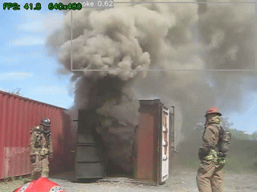
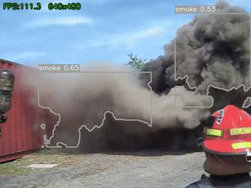
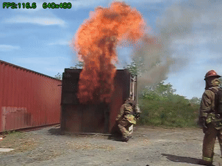
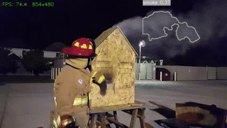

兩種視覺化方式
同一個偵測結果，兩種畫法
📏 Bounding Box 預設

煙霧偵測 ・ 矩形框畫法 ・ 紅框 = fire ／ 灰框 = smoke
最簡單的畫法：用「最小可包圍的矩形」圈住 AI 認定是火/煙的區域。 快速、直覺，但方框不能表達火焰的真實形狀。
🔥 Contour --contour




煙霧顏色輪廓（test1 前段）
在 YOLO 框框內，用 HSV 色彩空間 分析找出火焰橘紅色 / 煙霧灰白色的像素， 再用 OpenCV 描出真實輪廓——貼合形狀，僅多 4% 運算成本。
HSV 顏色範圍（visualize.py 定義）
🔥 fire：色相 0–35（黃→橘）＋ 160–180（紅），飽和度 ≥ 100，亮度 ≥ 100
💨 smoke：色相不限，飽和度 < 60（灰白色），亮度 ≥ 80
⚠️ 若 HSV 抓不到（夜景 / 黑煙）→ 自動退回方框，不會空白